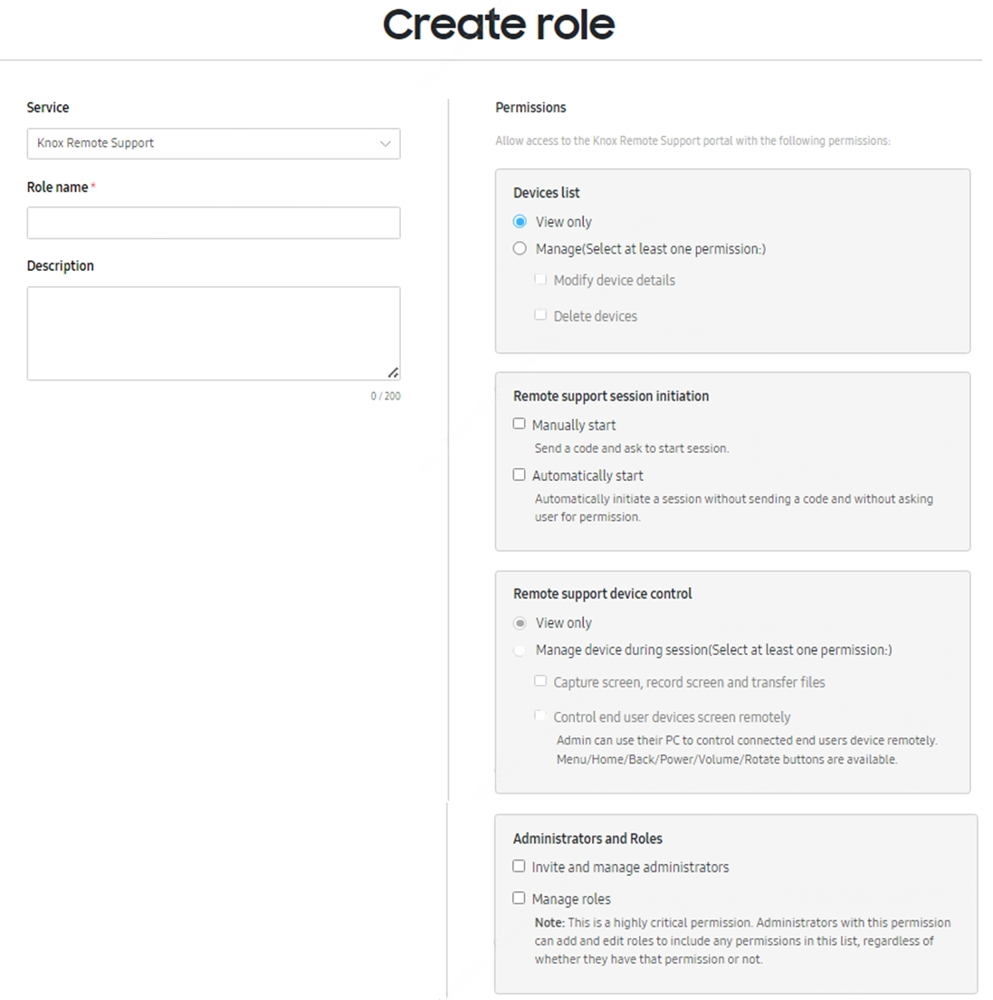

Manage admins and roles
Last updated September 25th, 2024
You can manage access and permissions for Knox Remote Support admins with Role-Based Access Control (RBAC). You can define roles, set permissions for the roles, and assign them to admins to manage access.
If as an MSP admin, you want to control the admin permissions on behalf of your customers, then define and assign specific roles to Knox Remote Support admins using Create role action in the Knox MSP Portal.
When you access Knox Remote Support through Knox Admin Portal, the process for adding admins and creating roles is the same as all Knox Suite products. See Manage Knox service administrators for more information.
Additionally, if you’re accessing Knox Remote Support from the Knox Manage console, you’re prompted to sign in to Knox Admin Portal with your Samsung Account or Single Sign On (SSO). Depending on your Knox Remote Support permission, the following pop-ups are displayed:
-
Select Start Type pop-up appears, the start types which you don’t have permission for, are greyed out.
-
Permission Required pop-up appears when you don’t have access to Knox Remote Support.
-
Unable to Start pop-up appears when you’re not assigned a session initiation role.
Existing Knox Remote Support users are automatically assigned full permission role.
Role-Based Access Control
When defining roles for your Knox Remote Support admins, select from the listed permissions on the Create role page in Knox Admin Portal or Knox MSP Portal.
You can assign and manage permissions only if you have the required access. If you don’t have required access to create a role, the permissions are disabled.

You can assign the following permissions to the role:
Devices list
Use these permissions to provide admins with access to the Devices menu in Knox Remote Support console. You can add View only or Manage permissions, and add the ability to Modify device details and Delete devices.
Remote support session initiation
Use these permissions to provide admins with the ability to initiate remote support sessions. These permissions are optional.
-
If you want admins to be able to send a code and ask the device user to start a session, select Manually start.
-
If you want to allow automatic initiation of session without any code or user permission, select Automatically start.
Remote support device control
Use these permissions to provide admins with the ability to control and interact with the device during remote support session. You can add View only or Manage device during session permissions, and add the ability to capture screen, record screen and transfer files, and control end user devices screen remotely permission. The permission to control end user devices remotely lets admins control the Menu, Home, Back, Power, Volume Down/Up and Rotate buttons of the device during a remote session.
Remote support device control permission is available only if you define the Remote support session initiation permission.
Administrators and Roles
Use these permissions to provide admins the ability to control admin and roles with the following role privileges: Invite and manage administrators, Manage roles.
Manage roles is a key permission that allows admins to add and edit roles and modify their permissions.
On this page
Is this page helpful?